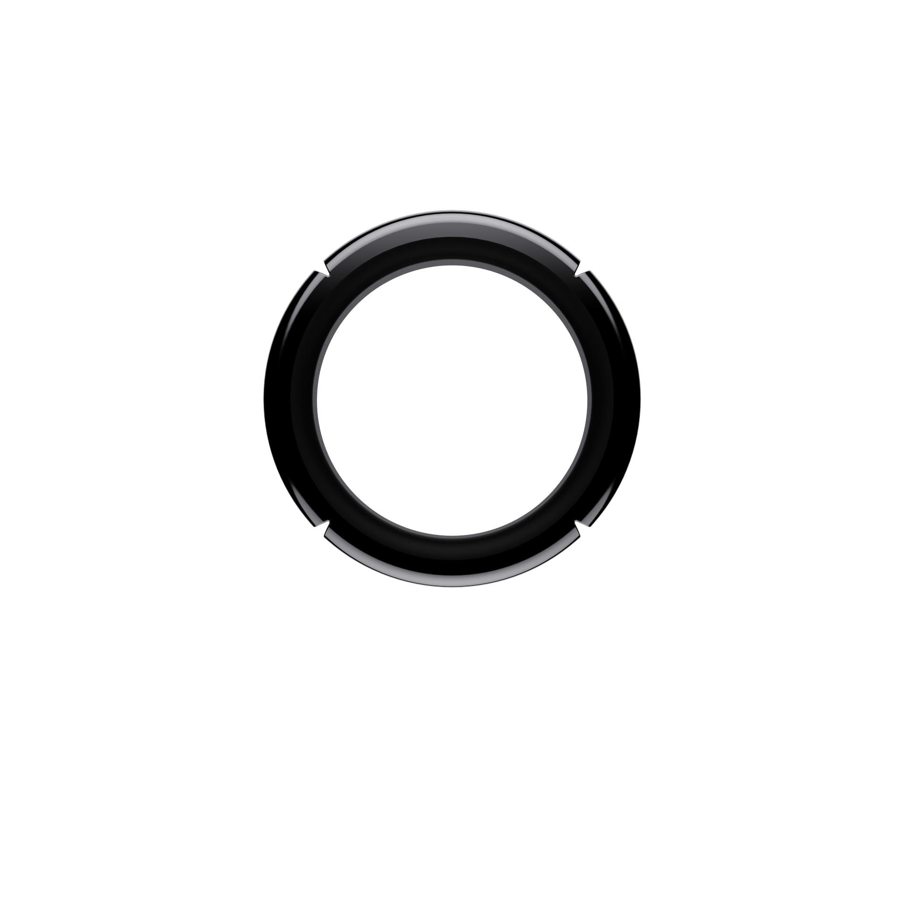

MONO
·
STONE
iOS 原型 · 点击卡片看详情 · 右下按钮模拟戒指录音
9:41

MONOSTONE
AI 戒指
开始
早上好，明明
第 12 天 · 戒指已连接 · 今日第 8 次交互
今日速览
你今天和 AI 交互了
8 次
其中
3 次
走路时、
2 次
会后、
3 次
电脑前
Monostone 为你省下
47 分钟
整理时间
全部
8
长录音
2
指令
2
灵感
2
待办
2
今天
长录音
2 小时前
和蔡哥的 Series A 跟进会
42:18
·
4 人
·
Series A
·
3 项待办
指令
1 小时前
"帮我起草给蔡哥的 follow-up 邮件"
已完成
·
调取 4 项上下文
灵感
45 分钟前
Memory 的 L2→L3 promotion 可以加 confidence decay
走路时
·
Monostone 后端
·
关联 3 条过往
指令
刚刚
"帮我做 Sandbar 最新融资情况的 research"
执行中
·
联网搜索中
·
还剩约 3 分钟
日程
30 分钟前
周四下午 3 点去看牙医
4/11 15:00
·
已写入 Apple 日历
昨天
灵感
22:14
戒指 onboarding 可以加一步 LinkedIn 导入，让 Day 1 就有 context
开车时
·
Monostone iOS
长录音
16:40
林啸 Memory A/B 对比测试评审
28:04
·
3 人
·
Monostone 后端
待办
11:20
提醒 Marshall 周五之前锁定 ODM 供应商
4/12 之前
·
已写入 Linear
录音中
0:00
首页
我
返回
···
分享
返回
···
存为草稿
发送
返回
···
归档
加入项目
返回
···
修改
取消
完成
取消
正在聆听
长录音模式
已加载上下文 ·
Series A
蔡哥 · Linear Capital
会议 · 2 小时前
3 个未回复邮件
明
明明
Max 订阅
Monostone 戒指
已连接 · 第 12 天
87%
日历与提醒
›
投递目标
›
自带 API Key
›
隐私与数据
›
导出所有数据
›
高级设置
›
重新开始引导
›
首页
我
返回
投递目标
Monostone 的处理结果可以自动投递到这些地方。指令生成的邮件、会议纪要、待办，都会根据你的配置推送到对应服务。
已连接
📅
Apple 日历
mingming@icloud.com
已连接
L
Linear
team:Monostone · project:Hardware
已连接
N
Notion
workspace:Monostone
已连接
可添加
M
Gmail
发送指令产出的邮件草稿
连接
O
Obsidian
同步到本地 vault
连接
G
Google Calendar
双向同步日程
连接
返回
自带 API Key
使用你自己的 API Key，可以获得更大的调用额度，并且你的数据只流经你授权的模型供应商。Key 通过系统 Keychain 加密保存。
已配置
A
Anthropic
sk-ant-****·**fh7Q · 本月用了 240 万 token
管理
GPT
OpenAI
sk-proj-****·**bN2a · 本月用了 180 万 token
管理
可添加
✦
Google Gemini
支持 2.0 Flash · 1.5 Pro
添加 Key
默认模型
Claude Opus 4.6
长录音结构化 · 指令执行默认
GPT-4o
更低延迟 · 适合短录音分类
Claude Haiku 4.5
快 · 省 token · 适合灵感清理
返回
日历与提醒
Monostone 会读取你连接的日历用于会议识别和冲突检测，也会把待办/日程写入这些系统。
已连接的日历
📅
Apple 日历
主日历 · 通过 EventKit
G
Google Calendar
未连接
连接
O
Outlook
未连接
连接
默认写入
Apple 日历
所有带时间的日程写入这里
Apple 提醒事项
无时间的待办写入这里
提醒策略
自动提前提醒
会议提前 10 分钟 · 待办提前 1 小时
通勤时间修正
根据地点自动延后提醒
返回
隐私与数据
你的录音和上下文是你的核心资产。Monostone 承诺你的数据始终由你控制，任何调取都可审计。
音频存储
仅设备本地
音频不上云，只有转写文本上传
加密云端同步
可跨设备访问原始音频
数据保留期
30 天
90 天
永久保留
权限
麦克风
用于手动录音按钮
已授权
蓝牙
连接戒指
已授权
位置
场景识别（走路/会后/电脑前）
已授权
日历
读写 EventKit
已授权
删除所有数据并重置账户
返回
导出所有数据
你的 Context 是可移植资产。任何时候都可以完整导出，换其他工具也不会丢失。
完整导出
Markdown 归档
所有长录音、指令、灵感、待办以 Markdown 文件形式导出，按日期分文件夹。可以直接导入 Obsidian / Logseq。
导出 .zip
JSON 原始数据
完整的 card + memory + chat 结构化数据，包含原始 transcript 和 metadata。适合自建后端或迁移。
导出 .json
按类型导出
只导出长录音
包含音频 · 约 1.2 GB
导出
只导出指令产出
邮件/研究报告/代码 · 约 8 MB
导出
只导出灵感
含音频 · 约 320 MB
导出
完整总结
✕
Action Item
✕
分享
✕
预览
格式
Markdown
.md
PDF
.pdf
纯文本
.txt
分享到
⎘
复制
M
邮件
i
信息
N
Notion
S
Slack
W
微信
↓
AirDrop
□
文件
返回
高级设置
短录音分类
自动分类
由 AI 判断短录音是指令 / 灵感 / 待办
低置信度时询问
AI 把握不大时让你确认
戒指
触觉反馈
开始录音时轻微振动
长按确认短录音
按住时长 ≥ 0.3s 才识别为短录音
开发
调试日志
记录 BLE / API / WebSocket 事件
模拟戒指
无硬件时用于测试
清除本地缓存
释放约 480 MB
清除
Monostone iOS v0.1 · Build 1234
© 2026 Monostone Inc.